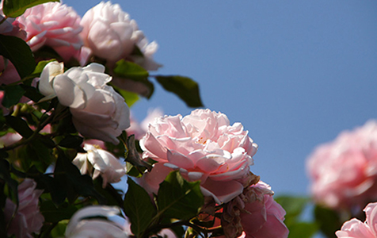
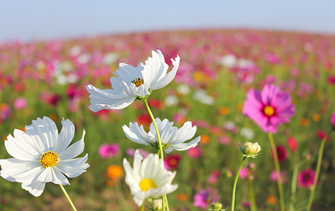
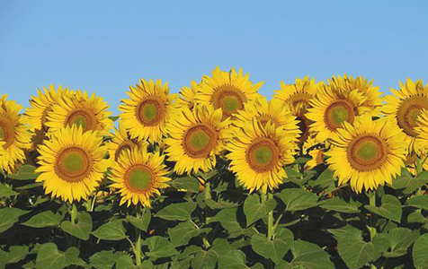
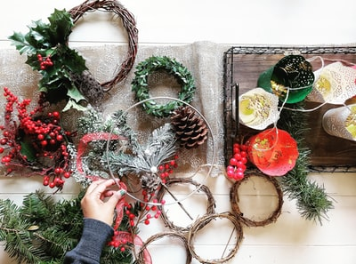
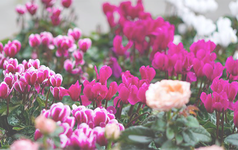
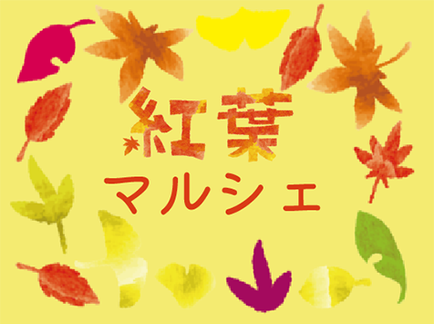

年末年始の休業日のお知らせ
早速ではございますが、2021年12月28日から2022年1月3日までお休みとさせていただきます。よろしくご了承のほどをお願い致します。
本年中のご愛顧に心より御礼申し上げますとともに、来年も変わらぬお引立てのほど、宜しくお願い申し上げます。
例

紅葉と共に園内のバラもまだ楽しんでいただけます。
バラ開花状況は7から8割程度です。
撮影日：2021年11月9日 15:00
※今後こちらのページでは、アルプスフラワーパークの
最新の開花状況を随時更新してお届けします是非、ご来
園予定のご参考になさって下さい。
※尚、天候や気温によっては開花状況に変化があります
ことをご理解下さい。

営業再開後、はじめての週末を迎えた園内は、秋日和の
気持ちのよい晴天で、たくさんのお客様で賑わいました。
園内に入った丘には可愛らしいコスモスが咲き始めてい
ます。コスモス開花状況は8から9割程度です。
※今後こちらのページでは、アルプスフラワーパークの
最新の開花状況を随時更新してお届けします是非、ご来
園予定のご参考になさって下さい。
※尚、天候や気温によっては開花状況に変化があります
ことをご理解下さい。

夏晴れの気持ちのよい晴天で、たくさんのお客様で賑わ
いました。園内に入った丘には立派なひまわりが咲き始
めています。ひまわり開花状況は8から9割程度です。
※今後こちらのページでは、アルプスフラワーパークの
最新の開花状況を随時更新してお届けします是非、ご来
園予定のご参考になさって下さい。
※尚、天候や気温によっては開花状況に変化があります
ことをご理解下さい。


鹿児島県内の生産者が育成する様々な品種のシクラメン
を中心に展示、紹介します。
開催日 2021年12月04日 ～ 2022年01月09日
場 所 ：屋内庭園
開催時間 開始時間： 9時00分
終了時間：17時00分
※ 12月28日～1月3日は休園日です。
※ イルミネーション期間中は21時まで

坂山にゆかりのある作家による雑貨販売
地元の飲食店・カフェの出店
会場 噴水広場前
開催日 11月23日
時間 10時～16時
雑貨はドライフラワーやハンドメイドアクセサリーなど
食品は手作りパン、お菓子、うどん、焼き芋など
ご来場お待ちしております。